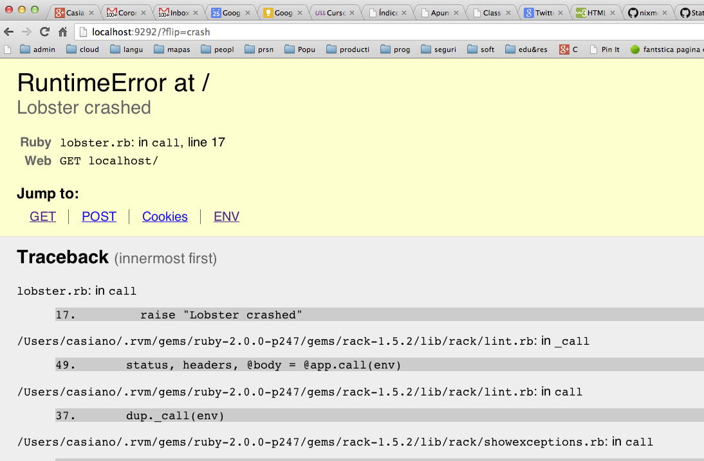

Sig: Práctica: Accediendo a Twitter Sup: Rack, un Webserver Ruby Ant: Gestión de Sesiones Con:
Este código se encuentra en https://github.com/crguezl/rack-lobster
[~/local/src/ruby/sinatra/rack/rack-lobster(master)]$ cat lobster.rb
require 'rack/request'
require 'rack/response'
module Rack
class Lobster
LobsterString = "a lobster"
def call(env)
req = Request.new(env)
req.env.keys.sort.each { |x| puts "#{x} => #{req.env[x]}" }
if req.GET["flip"] == "left"
lobster = LobsterString.reverse
href = "?flip=right"
elsif req.GET["flip"] == "crash"
raise "Lobster crashed"
else
lobster = LobsterString
href = "?flip=left"
end
res = Response.new
res.write <<-"EOS"
<title>Lobstericious!</title>
<pre>
#{lobster}
</pre>
<p><a href='#{href}'>flip!</a></p>
<p><a href='?flip=crash'>crash!</a></p>
EOS
res.finish
end
end
end
if $0 == __FILE__
require 'rack'
require 'rack/showexceptions'
Rack::Server.start(
:app => Rack::ShowExceptions.new(
Rack::Lint.new(
Rack::Lobster.new)),
:Port => 9292,
:server => 'thin'
)
end
Véase:
(Rack::ShowExceptions catches all exceptions raised from the app it wraps. It shows a useful backtrace with the sourcefile and clickable context, the whole Rack environment and the request data.
Be careful when you use this on public-facing sites as it could reveal information helpful to attackers)
(Rack::Lint validates your application and the requests and responses according to the Rack spec)
call que recibe una variable env describiendo el entorno CGI.
Esto es, se trata de aplicaciones que siguen el protocolo Rack.
Así este código:
Rack::Server.start(
:app => Rack::ShowExceptions.new(
Rack::Lint.new(
Rack::Lobster.new)),
:Port => 9292,
:server => 'thin'
)
construye una nueva objeto/aplicación Rack que es la composición de los tres Racks.
[~/local/src/ruby/sinatra/rack/rack-lobster(master)]$ cat Rakefile
desc "run the server"
task :default do
sh "ruby lobster.rb"
end
desc "run the client flip left"
task :left do
sh %q{curl -v 'http://localhost:9292?flip=left'}
end
desc "run the client flip right"
task :right do
sh %q{curl -v 'http://localhost:9292?flip=right'}
end
desc "run the client. Generate exception"
task :crash do
sh %q{curl -v 'http://localhost:9292/?flip=crash'}
end
[~/local/src/ruby/sinatra/rack/rack-lobster(master)]$ rake left
curl -v 'http://localhost:9292?flip=left'
* About to connect() to localhost port 9292 (#0)
* Trying ::1... Connection refused
* Trying 127.0.0.1... connected
* Connected to localhost (127.0.0.1) port 9292 (#0)
> GET /?flip=left HTTP/1.1
> User-Agent: curl/7.21.4 (universal-apple-darwin11.0) libcurl/7.21.4 OpenSSL/0.9.8y zlib/1.2.5
> Host: localhost:9292
> Accept: */*
>
< HTTP/1.1 200 OK
< Content-Length: 168
< Connection: keep-alive
< Server: thin 1.5.1 codename Straight Razor
<
<title>Lobstericious!</title>
<pre>
retsbol a
</pre>
<p><a href='?flip=right'>flip!</a></p>
<p><a href='?flip=crash'>crash!</a></p>
* Connection #0 to host localhost left intact
* Closing connection #0
[~/local/src/ruby/sinatra/rack/rack-lobster(master)]$ rake right
curl -v 'http://localhost:9292?flip=right'
* About to connect() to localhost port 9292 (#0)
* Trying ::1... Connection refused
* Trying 127.0.0.1... connected
* Connected to localhost (127.0.0.1) port 9292 (#0)
> GET /?flip=right HTTP/1.1
> User-Agent: curl/7.21.4 (universal-apple-darwin11.0) libcurl/7.21.4 OpenSSL/0.9.8y zlib/1.2.5
> Host: localhost:9292
> Accept: */*
>
< HTTP/1.1 200 OK
< Content-Length: 167
< Connection: keep-alive
< Server: thin 1.5.1 codename Straight Razor
<
<title>Lobstericious!</title>
<pre>
a lobster
</pre>
<p><a href='?flip=left'>flip!</a></p>
<p><a href='?flip=crash'>crash!</a></p>
* Connection #0 to host localhost left intact
* Closing connection #0

Casiano Rodríguez León